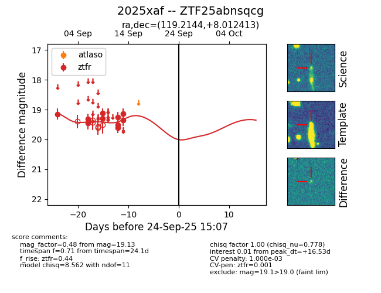
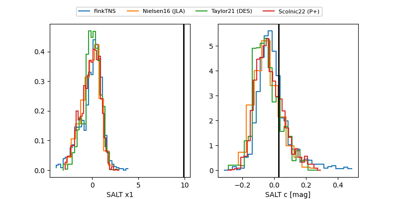

FINK: ZTF25abnsqcg
Lasair: ZTF25abnsqcg
ALeRCE: ZTF25abnsqcg
TNS: 2025xaf
YSE: 2025xaf
ZTF25abnsqcg (ztf,fink)
2025xaf (tns,yse)
equatorial (ra, dec) = (119.2144,+8.01241)
galactic (l, b) = (213.1184,+18.16292)


last ztfr=19.13
10 ztfr detections